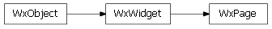

Bases: enaml.widgets.widget.Widget
A widget which can be used as a page in a Notebook control.
A Page is a widget which can be used as a child of a Notebook control. It can have at most a single child widget which is an instance of Container.
The title to use for the page in the notebook.
The icon to user for the page in the notebook. The tool tip to use for a page when the user hovers a tab.
Whether or not this individual page is closable. Note that the ‘tabs_closable’ flag on the parent Notebook must be set to True for this to have any effect.
A read only property which returns the page’s page widget.
An event fired when the user closes the page by clicking on the tab’s close button. This event is fired by the parent Notebook when the tab is closed. This event has no payload.
Open the page in the Notebook.
Calling this method will also set the page visibility to True.
Close the page in the Notebook.
Calling this method will set the page visibility to False.
alias of __NoInterface__

Bases: enaml.qt.qt_widget.QtWidget
A Qt implementation of an Enaml notebook Page.
Find and return the page widget child for this widget.
| Returns: | result (QWidget or None) – The page widget defined for this widget, or None if one is not defined. |
|---|

Bases: enaml.wx.wx_widget.WxWidget
A Wx implementation of an Enaml notebook Page.
Find and return the page widget child for this widget.
| Returns: | result (wxWindow or None) – The page widget defined for this widget, or None if one is not defined. |
|---|